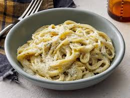

Creamy Garlic Pasta

Ingredients
- 200g pasta (spaghetti or fettuccine)
- 3 tablespoons olive oil
- 4 cloves garlic, minced
- 1 cup heavy cream
- 1/2 cup grated Parmesan cheese
- Salt and pepper to taste
- Fresh parsley, chopped (for garnish)
- Red pepper flakes (optional)
Instructions
- Cook the pasta according to package instructions until al dente. Drain and set aside.
- In a large skillet, heat olive oil over medium heat. Add the minced garlic and sauté until fragrant, about 1 minute.
- Pour in the heavy cream, stirring to combine. Allow it to simmer for 2-3 minutes.
- Stir in the grated Parmesan cheese until melted and creamy. Season with salt and pepper to taste.
- Add the cooked pasta to the skillet and toss until well coated in the creamy sauce.
- Serve immediately, garnished with chopped parsley and red pepper flakes if desired.
Enjoy Your Meal!
This creamy garlic pasta is a delightful dish that combines rich flavors with a comforting texture. Perfect for a quick weeknight dinner or a special occasion!